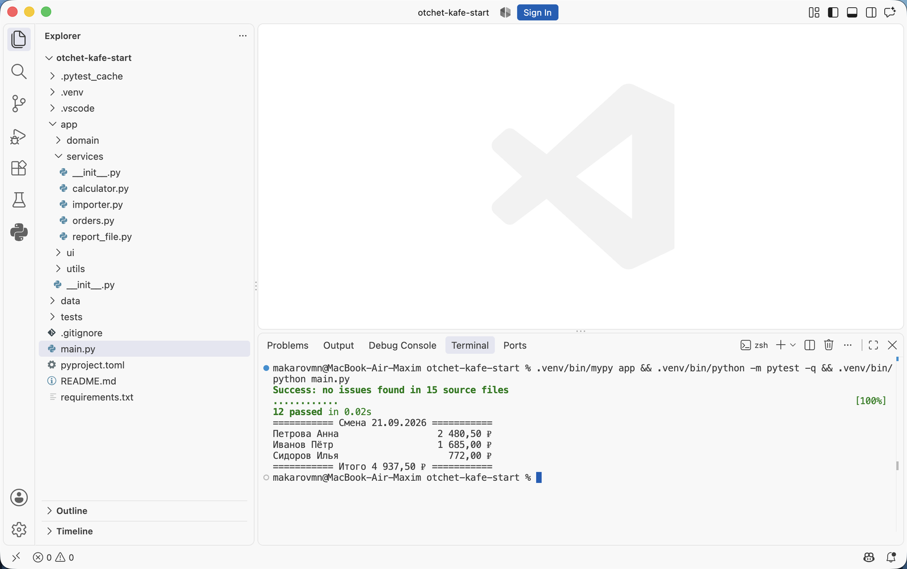

Аннотации типов и документация кода · МДК.01.01 · разработка программных модулей
Глава 4.4
Практика:
аннотации в проекте
В этой главе проект «Отчёт кафе» без единой аннотации доводится до чистой проверки mypy. Разобраны порядок работы по пакетам, способ выбрать тип для каждой функции, один модуль целиком до и после, и то, как после каждого пакета уменьшается число ошибок. Итог работы совпадает со вторым архивом темы — с него начинается часть про документацию.
- Категория
- Практика
- Время на паре
- Около 60 минут
- Проверка
- mypy, тесты, запуск
- Результат
- Проект с аннотациями,
mypy appбез ошибок
§1Задача
Первый архив темы — рабочий проект без аннотаций. Отчёт печатается, двенадцать тестов проходят, а mypy app находит семнадцать функций без типов. Задача: расставить аннотации у всех семнадцати, не меняя поведения программы, и получить от mypy ответ Success.
§2Подготовка
- Распакуйте первый архив и откройте папку
otchet-kafe-bez-tipovв VS Code. - Создайте окружение и установите зависимости:
python3 -m venv .venv, затем.venv/bin/pip install -r requirements.txt. В списке зависимостей есть mypy. - Включите проверку в редакторе: добавьте в
.vscode/settings.jsonстроку"python.analysis.typeCheckingMode": "basic". - Запустите проект и тесты:
.venv/bin/python main.pyи.venv/bin/python -m pytest -q. Запомните итог отчёта —4 937,50 ₽: после работы он должен остаться тем же. - Запустите
.venv/bin/mypy appи сохраните вывод. Семнадцать строк — это список работы.
§3Порядок: от листьев к корню
Модули проекта зависят друг от друга. Это видно по импортам: domain вызывает normalize_name из utils, services создаёт объекты Order из domain, а main.py вызывает services, ui и utils. Аннотации расставляют в обратном порядке — начиная с модулей, которые ничего из проекта не вызывают.
Файл main.py в архиве оставлен с аннотациями: его функция build_report(path: Path) -> list[str] служит образцом записи.
utils, затем domain, затем services. Когда очередь доходит до services, поля Order из domain уже аннотированы, и редактор подсказывает их при наборе. Пакет ui ни от кого не зависит, его аннотируют последним. Цифры — порядок работы и число функций без аннотаций в пакете.§4Как выбрать тип
Для каждой функции ответ ищется в трёх местах по очереди.
Откуда брать тип
order.kopeks — это list[Order]. Если к нему вызывают .split() — это str.main.py в load_orders передаётся Path("data/smena.csv") — значит, параметр path: Path.return min(grades), max(grades) — пара целых, tuple[int, int]. Нет return со значением — -> None. Есть yield — Iterator[...].Когда сомнения остаются, ставят предполагаемый тип и запускают mypy: неверное предположение он покажет ошибкой в месте вызова. Для выражений внутри функции помогает временная строка reveal_type(...) из главы 4.2.
§5Один модуль до и после
Модуль app/services/orders.py в первом архиве. mypy сообщает о нём три строки — по одной на функцию:
app/services/orders.py:7: error: Function is missing a type annotation [no-untyped-def] app/services/orders.py:14: error: Function is missing a type annotation [no-untyped-def] app/services/orders.py:26: error: Function is missing a type annotation [no-untyped-def]
app/services/orders.pyпереключите вариант
def load_orders(path): return [ Order(waiter=row["waiter"], kopeks=int(row["kopeks"])) for row in read_rows(path) ] def revenue_by_waiter(orders, top=0): ... totals = {} ... def sort_orders_in_place(orders): orders.sort(key=lambda order: -order.kopeks)
Что видноИз подписей неясно, что такое path и что в списке orders; неясно, что возвращают функции. Ответы находятся только чтением тел.
def load_orders(path: Path) -> list[Order]: return [ Order(waiter=row["waiter"], kopeks=int(row["kopeks"])) for row in read_rows(path) ] def revenue_by_waiter(orders: list[Order], top: int = 0) -> dict[str, int]: ... totals: dict[str, int] = {} ... def sort_orders_in_place(orders: list[Order]) -> None: orders.sort(key=lambda order: -order.kopeks)
Что изменилосьСемь аннотаций в подписях и одна у переменной. top=0 стало top: int = 0 — с аннотацией вокруг знака равенства ставят пробелы. Тела функций не тронуты.
Как выбраны типы. path — объект Path, так его передаёт main.py. Список orders содержит заказы: из элементов берут .waiter и .kopeks. sort_orders_in_place ничего не возвращает, поэтому -> None. Переменной totals нужна аннотация, потому что по пустому словарю {} тип ключей и значений не определить.
§6Трудные места проекта
| Место | Аннотация | Почему так |
|---|---|---|
read_rows в importer.py | -> Iterator[dict[str, str]] | В теле yield from — это генератор; строки CSV читаются словарями из строк |
grade_bounds | -> tuple[int, int] | Возвращается пара: минимум и максимум |
__post_init__ у Order | -> None | Метод проверяет данные и ничего не возвращает |
Shift.__init__ | (self, day: date) -> None | У __init__ результат всегда None; для date нужен импорт, он уже есть в файле |
self.orders в Shift | self.orders: list[Order] = [] | Пустой список — тип элементов не определить без аннотации |
self | без аннотации | Тип self проверка выводит сама — это объект того же класса |
поля Order | уже стоят | У dataclass аннотации — объявления полей, в первом архиве они оставлены |
§7Как уменьшается число ошибок
После каждого пакета запускайте .venv/bin/mypy app. Число ошибок в последней строке вывода — ход работы. Ниже настоящие итоги прогонов при работе в порядке из §3:
Итог mypy после каждого пакета
Found 17 errors in 10 files
первый архив
Found 12 errors in 7 files
−5
Found 8 errors in 5 files
−4
Found 1 error in 1 file
−7
Success: no issues found
готово
Число уменьшается ровно на количество функций в пакете — если это не так, значит, в аннотации ошибка и mypy нашёл несовпадение. Строку с ней он напечатает выше итога.
Когда mypy ответил Success, проверьте, что поведение не изменилось: тесты и запуск должны дать то же, что в §2.

Success: no issues found in 15 source files — типы расставлены во всём пакете. 12 passed — поведение не изменилось. Итог отчёта — те же 4 937,50 ₽, что до работы.Получившийся проект совпадает со вторым архивом темы во всех файлах, кроме README, — это проверено сравнением. С этого проекта начинается следующая часть темы: в главе 4.5 в него добавляются описания.
§8Что сдаётся с пары
Работа принята, когда
mypy app отвечает Success: no issues found.4 937,50 ₽.Any и подавленийВ коде нет Any и # type: ignore: каждое замечание исправлено аннотацией.app.§9Проверьте себя
Почему аннотации расставляют начиная с utils?
Так аннотации появляются сначала у того, что вызывают, и только потом у того, кто вызывает. Когда очередь доходит до services, поля Order уже аннотированы: редактор подсказывает их, а mypy сверяет вызовы.
Как определить тип результата функции, в которой есть yield?
Это генератор, его результат — итератор: Iterator[тип элемента]. У read_rows элементы — строки CSV в виде словарей, поэтому Iterator[dict[str, str]].
Почему у totals = {} нужна аннотация, а у ranked = sorted(...) — нет?
По пустому словарю проверка не может узнать тип ключей и значений. У sorted(...) тип результата выводится из аргумента — списка пар из словаря totals, тип которого уже известен.
После пакета domain число ошибок уменьшилось только на три. Что это значит?
Одна из аннотаций не совпала с тем, как функция используется, и mypy сообщил об этом новой ошибкой. Её строка стоит в выводе выше итога: нужно прочитать сообщение «пришло / ожидалось» и поправить аннотацию.
Итог главы
Проект без аннотаций доводится до чистой проверки в четыре шага по пакетам: utils, domain, services, ui, начиная с модулей, которые ничего из проекта не вызывают. Тип параметра определяется по тому, как его используют внутри и что передаёт вызывающий код, тип результата — по return, а наличие yield означает итератор. Переменным с пустыми коллекциями аннотация нужна, остальным — нет. После каждого пакета число ошибок mypy уменьшается на количество аннотированных функций: 17, 12, 8, 1, Success. Работа принята, когда проверка чистая, тесты проходят и отчёт не изменился. Результат совпадает со вторым архивом темы, и с него начинается часть про документацию: в следующей главе разобрано, какой бывает документация кода и чем докстринг отличается от комментария.